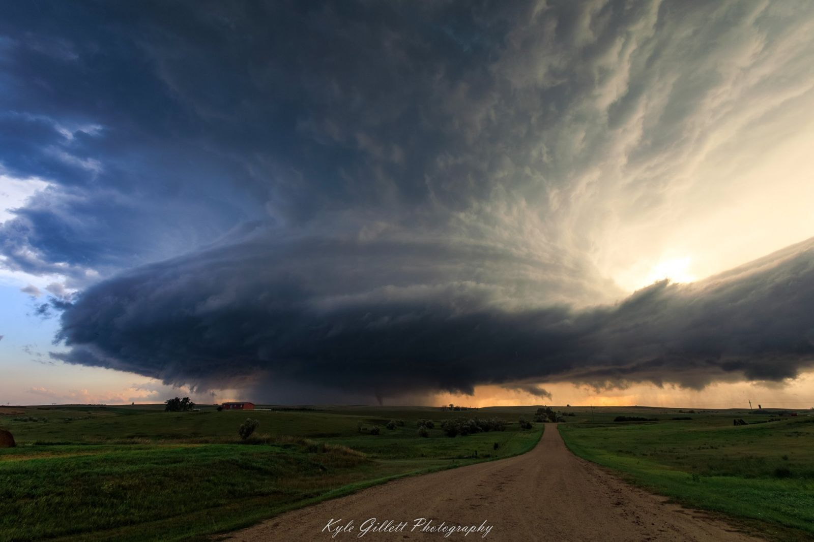
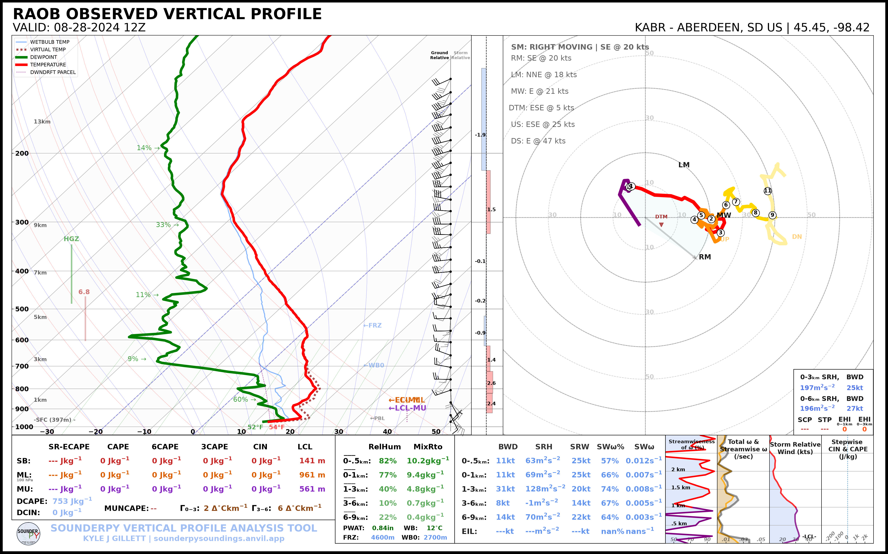
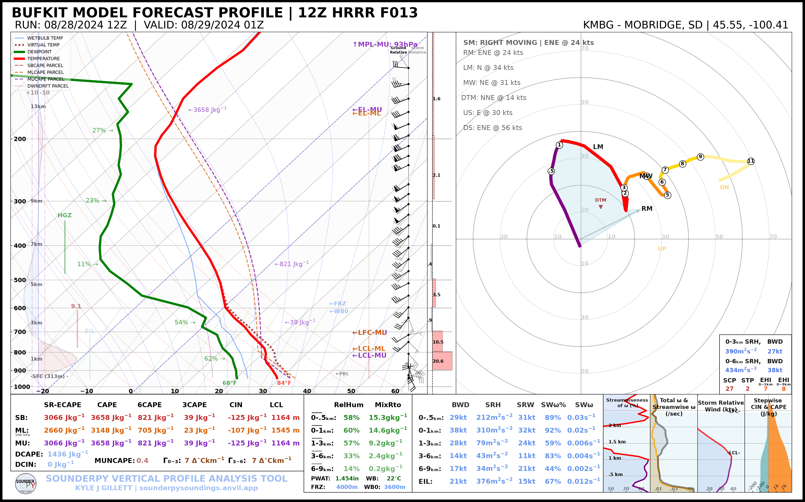
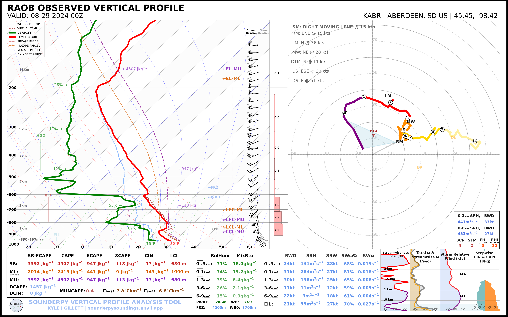
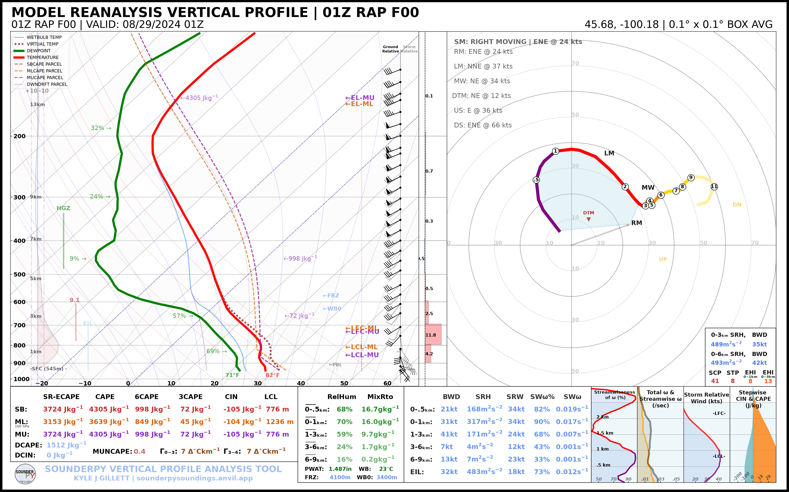
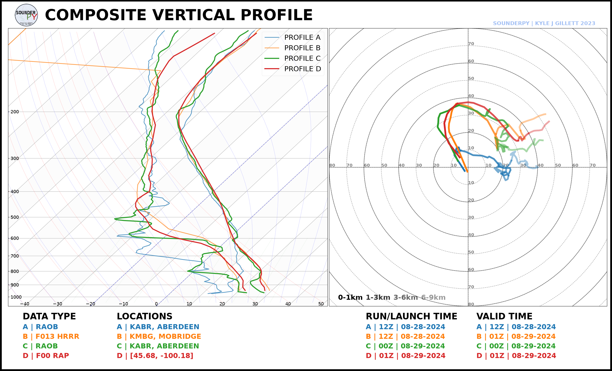

🌪️ Case Study: Mound City, SD
{kind=link}

A wide view of the supercell as it was producing a tornado west of Mound City, South Dakota.
On the evening of 28 August 2024, a supercell produced multiple tornadoes near Mound City, South Dakota along the intersection of the Missouri River and the South Dakota-North Dakota border. National Weather Service Aberdeen’s damage survey rated the first major tornado EF2, with estimated peak winds of 130 mph, a path length of 5.42 miles, and a maximum width of 200 yards.
The tornado began at approximately 7:50 PM CDT on 28 August (00:50 UTC on 29 August) west-southwest of Mound City and persisted through approximately 8:20 PM CDT. The event later produced additional tornadic circulations east and southeast of Mound City.
A complete NWS survey and review of this event can be found from NWS Aberdeen: 28 August 2024 Tornado Event
Case Study Goals
This example asks a simple forecasting question:
How did the thermodynamic and kinematic environment evolve from the morning forecast period into the time of tornadogenesis?
We will compare four profiles:
Profile |
Valid Time |
Location |
Purpose |
|---|---|---|---|
Morning ABR RAOB |
12 UTC 28 Aug |
Aberdeen, SD |
Observed morning environment |
12 UTC HRRR Forecast |
01 UTC 29 Aug |
Mobridge, SD (KMBG) |
Morning model forecast for event time |
Evening ABR RAOB |
00 UTC 29 Aug |
Aberdeen, SD |
Observed evening regional environment |
RAP Analysis |
01 UTC 29 Aug |
Near the tornado track |
Local model analysis during tornadogenesis |
This combination lets us examine three different questions:
How did the observed regional environment change from 12 UTC to 00 UTC?
What did the morning HRRR forecast suggest the environment would look like near event time?
How did a local RAP analysis near Mound City compare with the regional ABR observation and morning forecast?
Event Timeline
The first tornado occurred shortly after 00 UTC on 29 August.
28 August 2024
12 UTC / 7:00 AM CDT ABR morning RAOB
│
│ HRRR 12 UTC forecast evolves toward event time
│
00 UTC / 7:00 PM CDT ABR evening RAOB
│
00:50 UTC / 7:50 PM CDT EF2 tornado begins
│
01 UTC / 8:00 PM CDT RAP analysis / HRRR forecast comparison
│
01:20 UTC / 8:20 PM CDT first EF2 tornado ends
A Note on Spatial Representativeness
The ABR radiosonde is an important observed regional profile, but Aberdeen is east of the Mound City tornado track. It should therefore be interpreted as a regional observed environment, not as a direct measurement of the near-storm inflow at Mound City.
The RAP analysis is sampled near the tornado track to provide a more local estimate of the environment. Likewise, the HRRR BUFKIT profile uses KMBG (Mobridge) because it is much closer to the Mound City area than Aberdeen.
This distinction is important in severe-weather analysis: proximity soundings from models and observations each provide useful but different information.
1. Morning Observed Environment
First retrieve the Aberdeen (KABR) observed sounding from the morning of the event:
import sounderpy as spy
abr_12z = spy.get_obs_data("KABR", "2024", "08", "28", "12", hush=True)
Plot the sounding:
spy.build_sounding(abr_12z, radar=None, map_zoom=0)
{kind=link}

The 12 UTC sounding provides a baseline for the morning environment
2. Morning HRRR Forecast
A useful forecast comparison is the 12 UTC HRRR run, initialized around 7 AM CDT, evaluated at approximately 01 UTC on 29 August.
From a 12 UTC initialization, 01 UTC corresponds to forecast hour 13.
Using the Mobridge, SD (KMBG) BUFKIT site:
hrrr_f13 = spy.get_bufkit_data("hrrr", "KMBG", 13, "2024", "08", "28", "12", hush=True,)
{kind=link}

This profile represents what a forecaster using the morning HRRR could have examined for the environment near the expected event time.
Note
BUFKIT archive availability can vary by model, station, and cycle. The companion script uses KMBG because HRRR BUFKIT data are available for that station in the archive.
3. Evening Observed Environment
The nominal 00 UTC Aberdeen (KABR) sounding was taken near the beginning of the evening severe-weather period:
abr_00z = spy.get_obs_data("ABR", "2024", "08", "29", "00", hush=True)
{kind=link}

Comparing the 12 UTC and 00 UTC observations provides a direct look at the regional environmental evolution over the course of the day.
4. Local RAP Reanalysis
The first EF2 tornado began around 00:50 UTC. An hourly RAP analysis at 01 UTC therefore provides a useful near-event model analysis.
The sample location below is near the documented first tornado track:
mound_city = [45.68, -100.18]
rap_01z = spy.get_model_data("rap-ruc", mound_city, "2024", "08", "29", "01", box_avg_size=0.10, hush=True)
{kind=link}

The RAP profile is not an observation, but its local sampling makes it useful for evaluating spatial differences between the Aberdeen sounding and the environment near the tornadic supercell.
5. Compare the Profiles
SounderPy can place all four profiles on the same thermodynamic diagram:
profiles = [abr_12z, hrrr_f13, abr_00z, rap_01z]
spy.build_composite(profiles, shade_between=False, dark_mode='True',
colors_to_use=[ "tab:blue", "tab:orange", "tab:green", "tab:red"],
lw_to_use=[2, 2, 3, 3],
save=True,
filename="mound_city_environment_composite.png",
)
{kind=link}

The Thermodynamic Profile
The composite is particularly useful for comparing:
warming between the morning and evening observations;
changes in boundary-layer moisture;
differences between the HRRR forecast and the analyzed/observed environment;
model-versus-observation differences in vertical temperature structure.
The Kinematic Profile
When comparing the hodographs, consider:
How much low-level curvature was present in each profile?
How did the low-level winds differ between the regional ABR observation and
the near-storm RAP analysis? * How closely did the 12 UTC HRRR forecast resemble the wind profile near the time of tornadogenesis? * How did the magnitude and orientation of deep-layer shear compare among the forecast, observation, and analysis? * Were important changes confined primarily to the low levels, or did the entire wind profile evolve?
Event Context
The NWS Aberdeen event summary describes a supercell that developed from a storm in western Corson County, moved into southern North Dakota, and later interacted with newly developing storms to its south before moving east across the Missouri River. After crossing the river, the storm produced multiple tornadoes across Campbell County.
The first major tornado west/southwest of Mound City was rated EF2. The damage survey documented transmission-tower damage as well as damage to farmsteads, outbuildings, equipment, trees, and a travel trailer.
For the official event chronology, damage survey, radar imagery, photographs, and tornado-track information, see:
National Weather Service Aberdeen — August 28th 2024 Tornado Event